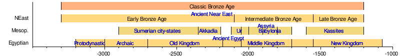

Overview
Ancient history is the aggregate of past events from the beginning of writing and recorded human history to the post-classical history era
Ancient history is a time period from the beginning of writing and
recorded human history through late(antiquity:
The span of recorded history is roughly 5,000 years, beginning with the development of Sumerian cuneiform script.
Ancient history covers all continents inhabited by humans in the period 3000 BC – AD 500, ending with the expansion of Islam in late antiquity.
The three-age system periodises ancient history into the Stone Age, the Bronze Age, and the Iron Age, with recorded history generally considered to begin with the Bronze Age.
The start and end of the three ages vary between world regions. In many regions the Bronze Age is generally considered to begin a few centuries prior to 3000 BC,
while the end of the Iron Age varies from the early first millennium BC in some regions to the late first millennium AD in others.
During the time period of ancient history, the world population was already exponentially increasing due to the Neolithic Revolution,
which was in full progress. While in 10,000 BC, the world population stood at 2 million, it rose to 45 million by 3000 BC.
By the Iron Age in 1000 BC, the population had risen to 72 million. By the end of the ancient period in AD 500, the world population is thought to have stood at 209 million.
In 10,500 years, the world population increased by 100 times.
The early human migrations in the Lower Paleolithic saw Homo erectus spread across Eurasia 1.8 million years ago.
Evidence for the use of fire has been dated as early as 1.8 million years ago, a date which is contested
with generally accepted evidence for the controlled use of fire dating to 780,000 years ago.
Actual use of hearths first appears 400,000 years ago.Dates for the emergence of Homo sapiens (modern humans) range from 250,000 to 160,000 years ago,
with the varying dates being based on DNA studies and fossils respectively.
Some 50,000 years ago, Homo sapiens migrated out of Africa.
They reached
Australia about 45,000 years ago, southwestern Europe about the same time, southeastern Europe and Siberia around 40,000 years ago, and Japan about 30,000
years ago. Humans migrated to the Americas about 15,000 years ago.
Evidence for agriculture emerges in about 9000 BC in what is now eastern Turkey and spread through the Fertile Crescent.
Settlement at Göbekli Tepe began
around 9500 BC and may have the world's oldest temple.The Nile River Valley has evidence of sorghum and millet cultivation starting around 8000 BC and
agricultural use of yams in Western Africa perhaps dates to the same time period. Cultivation of millet, rice, and legumes began around 7000 BC in China.
Taro cultivation in New Guinea dates to about 7000 BC also with squash cultivation in Mesoamerica perhaps sharing that date.
Animal domestication began with the domestication of dogs, which dates to at least 15,000 years ago, and perhaps even earlier.
Sheep and goats were domesticated around 9000 BC in the Fertile Crescent, alongside the first evidence for agriculture.
Other animals,
such as pigs and poultry, were later domesticated and used as food sources. Cattle and water buffalo were domesticated around 7000 BC and horses,
donkeys, and camels were domesticated by about 4000 BC. All of these animals were used not only for food, but to carry and pull people and loads, greatly
increasing human ability to do work. The invention of the simple plough by 6000 BC further increased agricultural efficiency.
Metal use in the form of hammered copper items predates the discovery of smelting of copper ores, which happened around 6000 BC in western Asia and
independently in eastern Asia before 2000 BC. Gold and silver use dates to between 6000 and 5000 BC. Alloy metallurgy began with bronze in about 3500 BC
in Mesopotamia and was developed independently in China by 2000 BC.Pottery developed independently throughout the world,
with fired pots appearing first
among the Jomon of Japan and in West Africa at Mali.Sometime between 5000 and 4000 BC the potter's wheel was invented.
By 3000 BC, the pottery wheel was
adapted into wheeled vehicles which could be used to carry loads further and easier than with human or animal power alone.
Writing developed separately in five different locations in human history: Mesopotamia, Egypt, India, China, and Mesoamerica.
By 3400 BC, "proto-literate"
cuneiform spread in the Middle East.Egypt developed its own system of hieroglyphs by about 3200 BC.
By 2800 BC the Indus Valley Civilisation had developed
its Indus script, which remains undeciphered.
Chinese Characters were independently developed in China during the Shang dynasty in the form of the Oracle Bone
Script dating to the period 1600 to 1100 BC.
Writing in Mesoamerica dates to 600 BC with the Zapotec civilization.
HISTORICAL PERIOD
The early historic period marks the beginnings of historically documented state polities, the emergence of selected
urban centers in parts of South India, and the connected process of a more widespread hinterland of agricultural villages.
The early historic period can be defined as starting ca. 250 BCE. The conquest of parts of the peninsula by the emperor of Ashoka
(of the Mauryan empire geographically focused in the Ganges valley, 273–232 BCE), and his numerous edicts inscribed in the Brahmi script
in parts of the Deccan, has generally been interpreted as the start of this period . These edicts include a pillar at Amravati in the Godavari
basin, and numerous rock inscriptions in northeastern Karnataka and adjacent Andhra Pradesh, such as those at Sannathi, Maski and Brahmagiri—the
latter two near significant Neolithic and Megalithic sites (e.g., Johansen and Bauer, 2022).
It is typically divided into three major phases: the Early Bronze Age, the Classical Age, and Late Antiquity.
Each phase is characterized by the development of different civilizations, cultures, and empires.
Let's first disscus about the
EARLY BRONZE AGE
:The Bronze Age (c. 3300 – c. 1200 BC) was a historical period characterised principally by the use of bronze tools and the development
of complex urban societies, as well as the adoption of writing in some areas. The Bronze Age is the middle principal period of the three-age
system, following the Stone Age and preceding the Iron Age. Conceived as a global era, the Bronze Age follows the Neolithic, with a transition
period between the two known as the Chalcolithic. The final decades of the Bronze Age in the Mediterranean basin are often characterised as a period
of widespread societal collapse known as the Late Bronze Age collapse (c. 1200 – c. 1150 BC), although its severity and scope are debated among scholars.
An ancient civilisation is deemed to be part of the Bronze Age if it either produced bronze by smelting its own copper and alloying it with tin, arsenic, or
other metals, or traded other items for bronze from producing areas elsewhere. Bronze Age cultures were the first to develop writing. According to archaeological
evidence, cultures in Mesopotamia, which used cuneiform script, and Egypt, which used hieroglyphs, developed the earliest practical writing systems.
In the Archaeology of the Americas, a five-period system is conventionally used instead, which does not include a Bronze Age, though some cultures there did
smelt copper and bronze. Indigenous metalworking arrived in Australia with European contact.
In many areas bronze continued to be rare and expensive, mainly because of difficulties in obtaining enough tin, which occurs in relatively few places,
unlike the very common copper. Some societies appear to have gone through much of the Bronze Age using bronze only for weapons or elite art, such as Chinese
ritual bronzes, with ordinary farmers largely still using stone tools. However, this is hard to assess as the rarity of bronze meant it was keenly recycled.

Metal use:
Bronze Age civilisations gained a technological advantage due to bronze's harder and more durable properties than other metals available at the time.
While terrestrial iron is naturally abundant, the higher temperature required for smelting, 1,250 °C (2,280 °F), in addition to the greater difficulty of working with it,
placed it out of reach of common use until the end of the 2nd millennium BC.[citation needed] Tin's lower melting point of 232 °C (450 °F) and copper's moderate melting point
of 1,085 °C (1,985 °F) placed both these metals within the capabilities of Neolithic pottery kilns,[citation needed] which date to 6000 BC and were able to produce temperatures of
at least 900 °C (1,650 °F).The Bronze Age is characterised by the widespread use of bronze, though the introduction and development of bronze technology were not universally synchronous.
Bronze was independently discovered in the Maykop culture of the North Caucasus as early as the mid-4th millennium BC, which makes them the producers of the oldest-known bronze. However,
the Maykop culture only had arsenical bronze. Other regions developed bronze and its associated technology at different periods. Tin bronze technology requires systematic techniques: tin must
be mined (mainly as the tin ore cassiterite) and smelted separately, then added to hot copper to make bronze alloy. The Bronze Age was a time of extensive use of metals and the development of trade networks.
A 2013 report suggests that the earliest tin-alloy bronze was a foil dated to the mid-5th millennium BC from a Vinča culture site in Pločnik, Serbia, although this culture is not conventionally
considered part of the Bronze Age;however, the dating of the foil has been disputed.
Near East:
West Asia and the Near East were the first regions to enter the Bronze Age, beginning with the rise of the Mesopotamian civilisation of Sumer in the mid-4th millennium BC.
Cultures in the ancient Near East practised intensive year-round agriculture; developed writing systems; invented the potter's wheel, created centralised governments
(usually in the form of hereditary monarchies), formulated written law codes, developed city-states, nation-states and empires; embarked on advanced architectural projects;
and introduced social stratification, economic and civil administration, slavery, and practised organised warfare, medicine, and religion. Societies in the region laid the
foundations for astronomy, mathematics, and astrology.
The following dates are approximate.

Near East Bronze Age divisions:
The Bronze Age in the Near East can be divided into Early, Middle and Late periods. The dates and phases below apply solely to the Near East, not universally.
However, some archaeologists propose a "high chronology", which extends periods such as the Intermediate Bronze Age by 300 to 500–600 years, based on material
analysis of the southern Levant in cities such as Hazor, Jericho, and Beit She'an.
- Early Bronze Age(EBA):3300-2100 BC
- 3300-3000:EBA I
- 3000-2700:EBA II
- 2700-2100:EBA III
- 2200-2100:EBA IV
- Middle Bronze Age(MBA)or Intermediate Bronze Age (IBA):2100-1550BC
- 2100-2000:MBA I
- 2000-1750:MBA II A
- 1750-1650:MBA II B
- 1650-1550:MBA II c
- Late Bronze Age (LBA): 1550–1200 BC
- 1550–1400: LBA I
- 1400–1300: LBA II A
- 1300–1200: LBA II B (Late Bronze Age collapse)
Anatolia:
The Hittite Empire was established during the 18th century BC in Hattusa, northern Anatolia.
At its height in the 14th century BC, the Hittite Kingdom encompassed central Anatolia, southwestern
Syria as far as Ugarit, and upper Mesopotamia. After 1180 BC, amid general turmoil in the Levant, which
is conjectured to have been associated with the sudden arrival of the Sea Peoples, the kingdom disintegrated
into several independent "Neo-Hittite" city-states, some of which survived into the 8th century BC.
Arzawa, in Western Anatolia, during the second half of the 2nd millennium BC, likely extended along southern Anatolia
in a belt from near the Turkish Lakes region to the Aegean coast. Arzawa was the western neighbour of the Middle and New
Hittite Kingdoms, at times a rival and, at other times, a vassal.
The Assuwa league was a confederation of states in western
Anatolia defeated by the Hittites under the earlier Tudhaliya I c. 1400 BC. Arzawa has been associated with the more obscure Assuwa
generally located to its north. It probably bordered it, and may have been an alternative term for it during some periods.
The classical age:
Classical Antiquity is a period in the history of the Near East and Mediterranean, extending roughly from the 8th century BC
to the 6th century AD. It is conventionally taken to begin with the earliest-recorded Greek poetry of Homer (8th–7th century BC),
and continues through the emergence of Christianity and the decline of the Roman Empire in the 5th to 6th centuries, the period during
which Late Antiquity blends into the "Dark Ages" or Early Middle Ages.
The geographic scope of Classical Antiquity may be taken to extend to Central Asia and North India due to the far-reaching influence
of Greek culture during the Hellenistic period (late 4th to 2nd centuries BC), but the historiographies of other world regions have their
own notion of "classicity" which do not fall within the scope of this list.
Classical antiquity, also known as the classical era, classical period, classical age, or simply antiquity,
is the period of cultural European history between the 8th century BC and the 5th century AD comprising the interwoven civilizations of ancient
Greece and ancient Rome known together as the Greco-Roman world, centered on the Mediterranean Basin. It is the period during which ancient Greece
and ancient Rome flourished and had major influence throughout much of Europe, North Africa, and West Asia.Classical antiquity was succeeded by the
period now known as late antiquity.
Conventionally, it is often considered to begin with the earliest recorded Epic Greek poetry of Homer (8th–7th centuries BC) and end with the fall of
the Western Roman Empire in 476 AD. Such a wide span of history and territory covers many disparate cultures and periods. Classical antiquity may also refer
to an idealized vision among later people of what was, in Edgar Allan Poe's words, "the glory that was Greece, and the grandeur that was Rome".
The culture of the ancient Greeks, together with some influences from the ancient Near East, was the basis of art,[6] philosophy, society, and
education in the Mediterranean and Near East until the Roman imperial period. The Romans preserved, imitated, and spread this culture throughout
Europe, until they were able to compete with it.This Greco-Roman cultural foundation has been immensely influential on the language, politics, law,
educational systems, philosophy, science, warfare, literature, historiography, ethics, rhetoric, art and architecture of both the Western, and through it, the modern world.
Surviving fragments of classical culture helped produce a revival beginning during the 14th century which later came to be known as the Renaissance, and various neo-classical
revivals occurred during the 18th and 19th centuries.
The Parthenon is one of the most recognizable symbols of the classical era, exemplifying ancient Greek culture.
Late antiquity:
Late antiquity marks the period that comes after the end of classical antiquity and stretches into the onset of the Early Middle Ages. Late antiquity as a period was popularized
by Peter Brown in 1971, and this periodization has since been widely accepted. Late antiquity represents a cultural sphere that covered much of the Mediterranean world, including
parts of Europe and the Near East.
Late antiquity was an era of massive political and religious transformation. It marked the origins or ascendance of the three major monotheistic religions: Christianity, rabbinic Judaism,
and Islam. It also marked the ends of both the Western Roman Empire and the Sasanian Empire, the last Persian empire of antiquity, and the beginning of the Arab conquests. Meanwhile, the Byzantine
(Eastern Roman) Empire became a militarized and Christianized society. This was also an era of significant cultural innovation and transformation, such as with the emergence of Late Antique literature
and art.
When the period precisely began and ended remains a matter of debate, but usually, the beginning of late antiquity is placed in the second or third centuries, and its end somewhere in the sixth to eighth
centuries, though the exact timing may vary by region.
The Barberini ivory, a late Leonid/Justinian Byzantine ivory leaf from an imperial diptych, from an imperial workshop in Constantinople in the first half of the sixth century (Louvre)
Terminology:
The term Spätantike, literally "late antiquity", has been used by German-speaking historians since its popularization by Alois Riegl in the early 20th century. It was given currency in English
partly by the writings of Peter Brown, whose survey The World of Late Antiquity (1971) revised the Gibbon view of a stale and ossified Classical culture, in favour of a vibrant time of renewals
and beginnings, and whose The Making of Late Antiquity offered a new paradigm of understanding the changes in Western culture of the time in order to confront Sir Richard Southern's The Making of
the Middle Ages.
Late 4th-century Roman bust of a Germanic slave in Augusta Treverorum (Trier) in Belgica Prima, seat of the praetorian prefecture of Gaul (Rheinisches Landesmuseum Trier)
The continuities between the later Roman Empire, as it was reorganized by Diocletian (r. 284–305), and the Early Middle Ages are stressed by writers[who?] who wish to emphasize that the seeds of
medieval culture were already developing in the Christianized empire, and that they continued to do so in the Eastern Roman Empire or Byzantine Empire at least until the coming of Islam. Concurrently,
some migrating Germanic tribes such as the Ostrogoths and Visigoths saw themselves as perpetuating the "Roman" tradition. While the usage "Late Antiquity" suggests that the social and cultural priorities of
classical antiquity endured throughout Europe into the Middle Ages, the usage of "Early Middle Ages" or "Early Byzantine" emphasizes a break with the classical past, and the term "Migration Period" tends to
de-emphasize the disruptions in the former Western Roman Empire caused by the creation of Germanic kingdoms within its borders beginning with the foedus with the Goths in Aquitania in 418.
The general decline of population, technological knowledge and standards of living in Europe during this period became the archetypal example of societal collapse for writers from the Renaissance. As a result
of this decline, and the relative scarcity of historical records from Europe in particular, the period from roughly the early fifth century until the Carolingian Renaissance (or later still) was referred to as the
"Dark Ages". This term has mostly been abandoned as a name for a historiographical epoch, being replaced by "Late Antiquity" in the periodization of the late Western Roman Empire, the early Byzantine Empire and the Early
Middle Ages. The term is seldom applied to Britain; the collapse of Roman rule in the island in the early fifth century is seen as a unique aspect of European history in the period.
Period history:
The Roman Empire underwent considerable social, cultural and organizational changes starting with the reign of Diocletian, who began the custom of splitting the Empire into Eastern and Western portions ruled by multiple
emperors simultaneously. The Sasanian Empire supplanted the Parthian Empire and began a new phase of the Roman–Persian Wars, the Roman–Sasanian Wars. The divisions between the Greek East and Latin West became more pronounced.
The Diocletianic Persecution of Christians in the early 4th century was ended by Galerius and under Constantine the Great, Christianity was made legal in the Empire. The 4th century Christianization of the Roman Empire was extended
by the conversions of Tiridates the Great of Armenia, Mirian III of Iberia, and Ezana of Axum, who later invaded and ended the Kingdom of Kush. During the late 4th century reign of Theodosius I, Nicene Christianity was proclaimed the
state church of the Roman Empire.
The city of Constantinople became the permanent imperial residence in the East by the 5th century and superseded Rome as the largest city in the Late Roman Empire and the Mediterranean basin. The longest Roman aqueduct system, the 250 km
(160 mi)-long Aqueduct of Valens was constructed to supply it with water, and the tallest Roman triumphal columns were erected there.[citation needed]
MigrationsThe Roman Empire underwent considerable social, cultural and organizational changes starting with the reign of Diocletian, who began the custom of splitting the Empire into Eastern and Western portions ruled by multiple emperors
simultaneously. The Sasanian Empire supplanted the Parthian Empire and began a new phase of the Roman–Persian Wars, the Roman–Sasanian Wars. The divisions between the Greek East and Latin West became more pronounced. The Diocletianic Persecution
of Christians in the early 4th century was ended by Galerius and under Constantine the Great, Christianity was made legal in the Empire. The 4th century Christianization of the Roman Empire was extended by the conversions of Tiridates the Great of
Armenia, Mirian III of Iberia, and Ezana of Axum, who later invaded and ended the Kingdom of Kush. During the late 4th century reign of Theodosius I, Nicene Christianity was proclaimed the state church of the Roman Empire.
The city of Constantinople became the permanent imperial residence in the East by the 5th century and superseded Rome as the largest city in the Late Roman Empire and the Mediterranean basin. The longest Roman aqueduct system,
the 250 km (160 mi)-long Aqueduct of Valens was constructed to supply it with water, and the tallest Roman triumphal columns were erected there.[citation needed]
In the 6th century, Roman imperial rule continued in the East, and the Byzantine-Sasanian wars continued. The campaigns of Justinian the Great led to the fall of the Ostrogothic and Vandal Kingdoms, and their reincorporation into the Empire,
when the city of Rome and much of Italy and North Africa returned to imperial control. Though most of Italy was soon part of the Kingdom of the Lombards, the Roman Exarchate of Ravenna endured, ensuring the so-called Byzantine Papacy.
Justinian constructed the Hagia Sophia, a great example of Byzantine architecture, and the first outbreak of the centuries-long first plague pandemic took place. At Ctesiphon, the Sasanians completed the Taq Kasra, the colossal iwan of
which is the largest single-span vault of unreinforced brickwork in the world and the triumph of Sasanian architecture
In the 6th century, Roman imperial rule continued in the East, and the Byzantine-Sasanian wars continued. The campaigns of Justinian the Great led to the fall of the Ostrogothic and Vandal Kingdoms, and their reincorporation into the Empire,
when the city of Rome and much of Italy and North Africa returned to imperial control. Though most of Italy was soon part of the Kingdom of the Lombards, the Roman Exarchate of Ravenna endured, ensuring the so-called Byzantine Papacy. Justinian
constructed the Hagia Sophia, a great example of Byzantine architecture, and the first outbreak of the centuries-long first plague pandemic took place. At Ctesiphon, the Sasanians completed the Taq Kasra, the colossal iwan of which is the largest
single-span vault of unreinforced brickwork in the world and the triumph of Sasanian architecture
Religion
One of the most important transformations in late antiquity was the formation and evolution of the Abrahamic religions: Christianity, Rabbinic Judaism and, eventually, Islam.
A milestone in the spread of Christianity was the conversion of Emperor Constantine the Great (r. 306–337) in 312, as claimed by his Christian panegyrist Eusebius of Caesarea,
although the sincerity of his conversion is debated.
Constantine confirmed the legalization of the religion with the Edict of Milan in 313, which he jointly issued with his rival in the East, Licinius (r. 308–324).
By the late 4th century, Emperor Theodosius I had made Christianity the state religion, a development which transformed the classical Roman world, characterized by
Peter Brown as "rustling with the presence of many divine spirits."
Modern statue of Constantine I at York, where he was proclaimed Augustus in 306
Constantine I was a key figure in many important events in Christian history, as he convened and attended the first ecumenical council of bishops at Nicaea in 325,
subsidized the building of churches and sanctuaries such as the Church of the Holy Sepulchre in Jerusalem, and involved himself in questions such as the timing of
Christ's resurrection and its relation to the Passover.
The birth of Christian monasticism the 3rd century was a major step in the development of Christian spirituality.[19] While it initially operated outside the episcopal
authority of the Church, it would become hugely successful and by the 8th century it became one of the key Christian practices. Monasticism was not the only new Christian
movement to appear in late antiquity, although it had perhaps the greatest influence and it achieved unprecedented geographical spread. It influenced many aspects of Christian
religious life and led to a proliferation of various ascetic or semi-ascetic practices. Holy Fools and Stylites counted among the more extreme forms but through such personalities
like John Chrysostom, Jerome, Augustine or Gregory the Great monastic attitudes penetrated other areas of Christian life
Late antiquity marks the decline of Roman state religion, circumscribed in degrees by edicts likely inspired by Christian advisors such as Eusebius to 4th-century emperors, and a
period of dynamic religious experimentation and spirituality with many syncretic sects, some formed centuries earlier, such as Gnosticism or Neoplatonism and the Chaldaean oracles,
some novel, such as Hermeticism. Culminating in the reforms advocated by Apollonius of Tyana being adopted by Aurelian and formulated by Flavius Claudius Julianus to create an organized
but short-lived pagan state religion that ensured its underground survival into the Byzantine age and beyond.
Mahāyāna Buddism developed in India and along the Silk Road in Central Asia, while Manichaeism, a Dualist faith, arose in Mesopotamia and spread both East and West, for a time contending with Christianity in the Roman Empire.
Many of the new religions relied on the emergence of the parchment codex (bound book) over the papyrus volumen (scroll), the former allowing for quicker access to key materials and easier
portability than the fragile scroll, thus fueling the rise of synoptic exegesis, papyrology. Notable in this regard is the topic of the Fifty Bibles of Constantine
Ancient civilizations
Ancient civilizations were societies from the distant past that left behind significant material remains, monuments, and artifacts, providing insights into their cultures, beliefs, and way of life.
Scholars often identify Mesopotamia, Egypt, the Indus Valley, and China as the earliest civilizations, as they developed continuously in the same geographic locations. Other notable ancient civilizations
include those of the Americas (Maya, Inca, Aztec) and Greece and Rome.
Legacy
The legacy of ancient history can be seen in modern government, law, language, architecture, and more. Its study provides insight
into human development and the foundations of modern society.Ancient India refers to the time period stretching from the foundations
of human civilization in India to the first great empire that ruled over the subcontinent, the Mauryan Empire. The legacies of the time
period continue to the modern-day, as the Ancient Indians laid the foundations for the modern-day culture of much of South Asia. Perhaps
the greatest demonstration of this is the prominence of Hinduism and Buddhism today; both religions were born in Ancient India.
Ancient Indian Civilization
Civilizations often pass their cultural, philosophical, and societal values from one generation to the next, a process known as continuity.
Meanwhile, preservation involves safeguarding the physical artifacts, language, and traditions that define a culture’s identity. Many civilizations
have faced disruptions to this continuity due to conquests, migration, or changes in political and religious beliefs. Yet, intangible aspects like spirituality
and community values frequently outlast physical structures and written documents.
The Indian civilization stands out for its impressive continuity, with both material and intangible aspects persisting over time. Ancient scriptures like the Vedas,
systems of governance rooted in dharma, and artistic traditions have endured alongside modern innovations. In contrast, Egypt, Mesopotamia, and Greece experienced significant
disruptions in their language, religion, and governance, leading to more substantial cultural transformations over the course of history.
Indian civilization traces its roots to the advanced urban planning and trade networks of the ancient Indian civilization like the Indus Valley Civilization.
Following the decline of this early phase, the Vedic Age laid the foundation for enduring religious, linguistic, and societal traditions.
The Mauryan and Gupta Empires later marked golden ages of political unity and cultural flourishing, leaving behind texts, art, and philosophical
schools that continue to resonate through Hinduism, Buddhism and Jainism. Despite facing foreign invasions and colonial rule, India adapted while preserving
its core values, serving as a living thread connecting its ancient and modern eras.
This page was last edited on 17 April 2025, at 16:30 (UTC). Text isavailable under the Creative Commons Attribution-ShareAlike 4.0 License; additional terms may apply. By using this site, you agree to the Terms of Use and Privacy Policy.
Wikipedia® is a registered trademark of the Wikimedia Foundation, Inc., a non-profit organization.
Privacy policyAbout WikipediaDisclaimersContact WikipediaCode of Conduct Developers statistics Cookie statement Mobile view